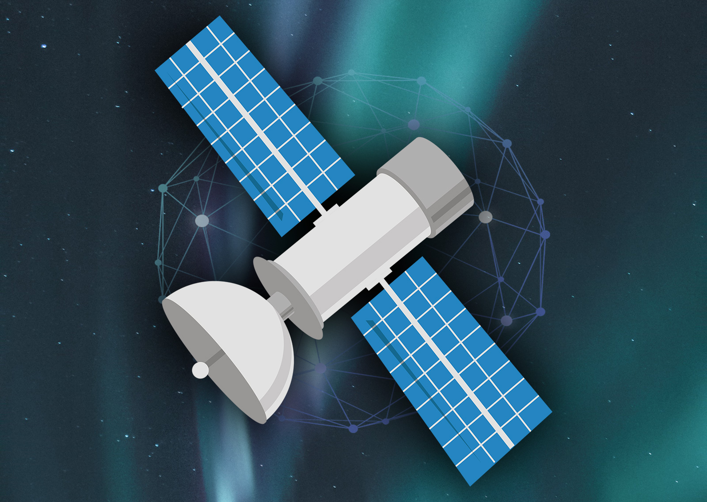
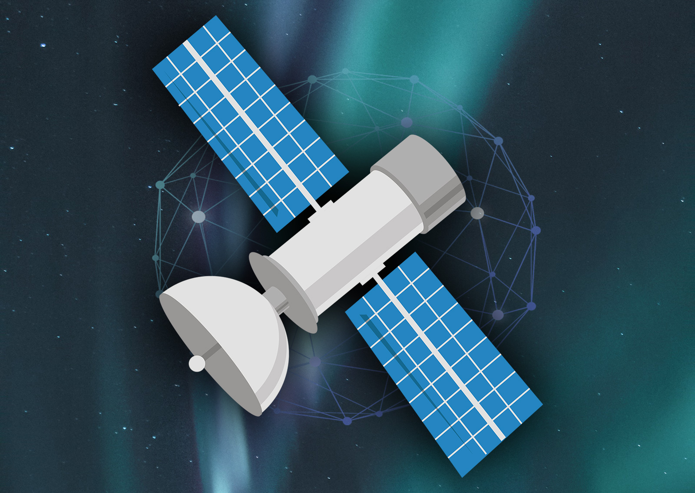

Ik heb de ICT opleiding in eerste instantie gekozen omdat je er veel kanten mee op kan.
In het eerste jaar heb ik het niveau onderschat en veel te weinig moeite gestopt in het begrijpen van de leerstof.
Ik dacht dat ik het met de tijd mee wel op zou pikken en besteedde niet veel moeite aan het proberen te begrijpen van wat ik aan het doen was.
Alles in combinatie heeft ervoor gezorgd dat ik vorig jaar besloten heb opnieuw te beginnen.
Nieuwe start met meer motivatie en gelukkig geen verdere problemen meer.
Ik wilde deze opleiding toch opnieuw doen omdat ik weet dat ik het beter kan dan ik heb laten zien, ik heb alleen teveel basis gemist.
Ik denk dat als ik het ga begrijpen
en meer werk verzet ik de opleiding echt erg leuk ga vinden en het makkelijker word om er werk van te maken.
Ik wil later richting de ESA (European Space Agency) te gaan omdat mijn grootste interesse samen met technologie toch de ruimte is.
Om
daar werk van te maken lijkt me erg gaaf, alleen leek astroloog me niks.
Ik ben erg geinterreseerd in automatisatie. Ik vind het cool om te zien hoe we steeds slimmere manieren vinden om robots te gebruiken om ons leven makkelijker te maken.
De software die bedacht word om een soort brein na te maken om een robot te laten denken fascineert me.
Daarnaast ligt mijn interesse ook bij het proces van het maken van een succesvolle game. Ik heb zelf vorig jaar iets gemaakt wat op een
game leek en dit is niet te vergelijken met het serieuze werk.
De dedicatie en werk dat er soms ingestopt word is enorm en er komt heel veel bij kijken.
 
